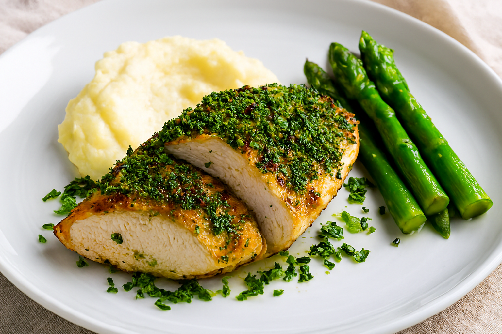

Herb-Crusted Chicken Breast

Ingredients:
- 4 chicken breasts, skin on
- 1 cup fresh breadcrumbs
- 2 tbsp chopped parsley
- 1 tbsp chopped thyme
- 1 tbsp chopped rosemary
- 2 cloves garlic, minced
- ¼ cup grated Parmesan
- 2 tbsp Dijon mustard
- Salt and pepper
- Olive oil
Instructions:
- Preheat oven to 190°C (375°F).
- Mix breadcrumbs, herbs, garlic, Parmesan, salt, and pepper.
- Brush chicken with Dijon mustard, then press herb mixture onto the skin side.
- Sear skin-side down in olive oil until golden.
- Transfer to oven and bake for 15–20 minutes until cooked through.
Wallah you now have one of the best dishes around the world!
Home